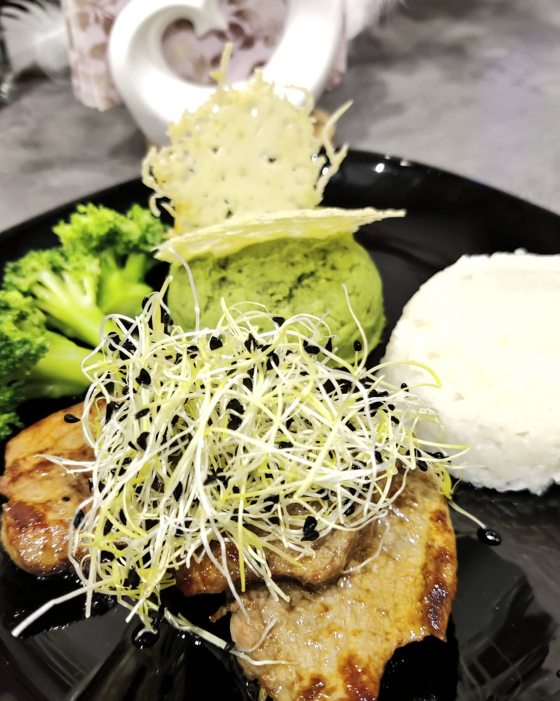

Teľacie mäso podľa @martina_strbakova — Normy Jedál
Dnes Vás ponúknem aspoň takto cez sociálne siete touto dobrotou, ktorú som vymyslela. Bolo to neskutočne delikátne a som normálne na seba hrdá🤣. Táto kombinácia sa mi podarila👌.
TEĽACIE V KOŇAKOVEJ OMÁČKE S HRÁŠKOVÝM PYRÉ A PARMEZÁNOVÝM CHIPSOM
Potrebujeme – hlavné ingrediencie:
* hrášok
* teľacie mäso
* parmezán
Potrebujeme - pomocné ingrediencie:
* ghee maslo
* cesnak
* provensálske bylinky
* sójová omáčka
* rastlinné/kravské mlieko
* olivový olej
* čerstvý/sušený rozmarín
* koňak/rum
Postup:
Na ghee masle orestujeme hrášok spolu s pretlačeným cesnakom a provensálskymi bylinkami. Po chvíľke túto zmes premiestnime do misky a spolu s mliekom a sójovou omáčkou vymixujeme na pyré.
Teľacie mäsko nakrájame na menšie steaky. Pripravíme si marinádu v pomere1:1:1 – sójová omáčka, olivový olej, koňak/rum. Do tejto marinády pridáme čerstvý alebo sušený rozmarín. Na približne 700g mäsa budeme potrebovať 1dcl marinády. Pripravenou marinádou zalejeme mäso a necháme odstáť. Potom len na troche tuku osmahneme. Mäsko môžeme pripraviť aj dusením v rúre – všetko spolu aj s marinádou zakryté pečieme približne 45minút na teplote 180°C.
Parmezánový chips si pripravíme úplne jednoducho a to tak, že kôpku nastrúhaného syru dáme na papier na pečenie a dáme zapiecť do rúry.
Pripravené mäso podávame s hráškovým pyré, parmezánovým chipsom. Môžeme zvoliť ďalšiu prílohu ako je napr. ryža.
#zdravastrava#telaciemaso#hrasok#omacka#zdravoachutne#zdraverecepty#masoverecepty#vyzivoveporadenstvo#zdravetelo#stravovaciplan#vyzivnejidlo#strukoviny#fitfood#instafood#vyziva#jedlojelaska#foodlover#